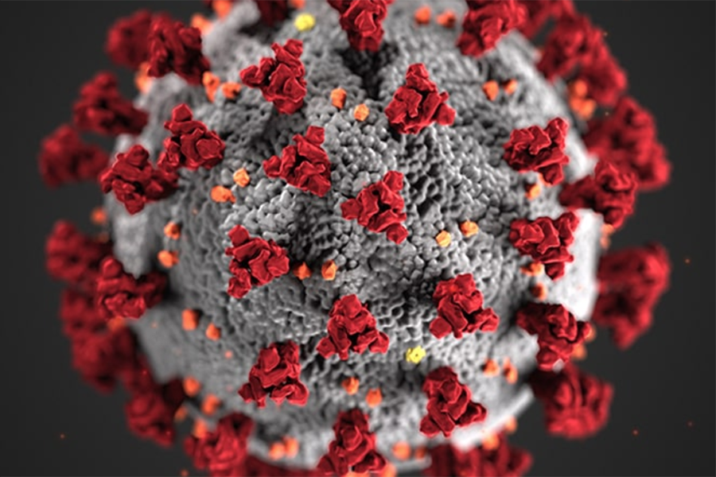

How computer science can help fight COVID-19
he COVID-19 pandemic has mobilized the world’s scientific community like no other recent crisis, including many researchers using the most modern
data science and artificial intelligence approaches At the University of Chicago, public health experts, computer scientists, economists andpolicy
analysts have launched projects using computational tools to better detect, diagnose, treat and prevent the spread of the deadly virus. This summer,
three of these projects received seedfunding from the C3.ai Digital Transformation Institute (DTI), a new partnership of technology companies
and universities committed to accelerating the benefits of artificial intelligence for business, government and society. The research attacks
the pandemic from several angles: helping policymakers control disease spread by identifying and addressing key social factors, physicians detect
the disease at earlier stages, and hospitals decide which patients require admission. A fourth project, a collaboration led by UChicago Medicine’s
Maryellen Giger, was fundedby the organization in spring.The awards were part of $5.4 million in funding distributed by DTI, after their inaugural
call for proposals in March. The group also provides AI software tools and a “data lake” of COVID-19 datasets to aid researchers studying the pandemic
.“The enthusiastic response among scientists and researchers coupled with the diverse, high-quality and compelling proposals we’ve received suggests
that we have the potential to alter the course of this global pandemic,” said Thomas M. Siebel, CEO of C3.ai. “In the face of this crisis,the Institute
is proud to bring together the best and brightest minds and provide direction and leadership to support objective analysis and AI-based, data-driven
science to mitigate COVID-19.”
for more information
Click Hereاضغط هنا
